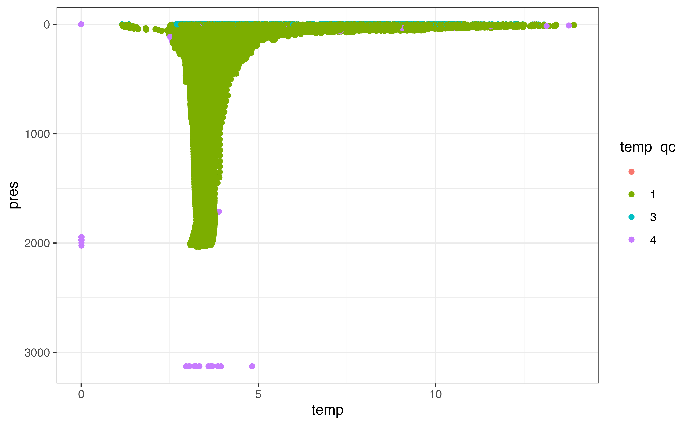

We’ll start by loading a few packages.
Fetch
The first step is to choose which area is representative of the region for which you would like to create an aggregated/summarized set of profiles. One way to do this is using a point and radius, for which argo_filter_radius() is provided to subset the global profile index argo_global_prof(). For example, the following point/radius results in approximately 475 profiles between Labrador and Greenland in the Labrador Sea. For the purposes of the virtual mooring, the radius needs to be small enough that the profiles are related to the conditions in the region you are attempting to model and large enough that there are enough profiles for window point of time you would like to model.
mooring_lat <- 55.7
mooring_lon <- -49.5
mooring_radius_km <- 150The next step is to (optionally) choose a window of time to consider. For the purposes of this article, we’ll consider the years between 2011 and 2019, inclusive.
Finally, it is worth considering whether or not the “realtime” or “delayed” data sets best suits your use-case. The delayed data set is more likely to have poor-quality measurements corrected; however, the realtime data set may have more profiles available. You should pick one or the other to avoid double-counting profiles collected by the same float! In this article we will use the realtime data set.
An index of all profiles available from the Argo program is available by calling argo_global_prof(). This will take 20-60 seconds to load depending on your internet connection; if you would like to avoid downloading the index file more than once you can configure a persistent cache directory, but be aware that this index is updated frequently.
profiles <- argo_global_prof() %>%
argo_filter_radius(
latitude = mooring_lat,
longitude = mooring_lon,
radius_km = mooring_radius_km
) %>%
argo_filter_date(
date_min = mooring_start,
date_max = mooring_end
) %>%
argo_filter_data_mode("realtime") %>%
argo_extract_path_info() %>%
select(file, file_float, date, latitude, longitude, everything()) %>%
arrange(date)
profiles
#> [90m# A tibble: 216 x 14[39m
#> file file_float date latitude longitude file_type file_cycle
#> [3m[90m<chr>[39m[23m [3m[90m<chr>[39m[23m [3m[90m<dttm>[39m[23m [3m[90m<dbl>[39m[23m [3m[90m<dbl>[39m[23m [3m[90m<chr>[39m[23m [3m[90m<int>[39m[23m
#> [90m 1[39m meds… 4901167 2011-07-03 [90m12:58:00[39m 56.1 -[31m51[39m[31m.[39m[31m8[39m prof 6
#> [90m 2[39m meds… 4901167 2011-07-13 [90m14:27:00[39m 56.3 -[31m51[39m[31m.[39m[31m5[39m prof 7
#> [90m 3[39m meds… 4901167 2011-07-23 [90m12:54:00[39m 56.2 -[31m51[39m[31m.[39m[31m4[39m prof 8
#> [90m 4[39m meds… 4901163 2011-07-30 [90m17:58:00[39m 56.7 -[31m48[39m[31m.[39m[31m6[39m prof 8
#> [90m 5[39m meds… 4901167 2011-08-02 [90m14:32:00[39m 56.0 -[31m51[39m[31m.[39m[31m1[39m prof 9
#> [90m 6[39m meds… 4901163 2011-08-09 [90m16:16:00[39m 56.8 -[31m48[39m[31m.[39m[31m7[39m prof 9
#> [90m 7[39m meds… 4901167 2011-08-12 [90m13:01:00[39m 55.8 -[31m51[39m[31m.[39m[31m0[39m prof 10
#> [90m 8[39m meds… 4901163 2011-08-19 [90m16:41:00[39m 56.8 -[31m49[39m[31m.[39m[31m1[39m prof 10
#> [90m 9[39m meds… 4901167 2011-08-22 [90m14:24:00[39m 56.5 -[31m50[39m[31m.[39m[31m2[39m prof 11
#> [90m10[39m meds… 4901163 2011-08-29 [90m18:08:00[39m 56.7 -[31m49[39m[31m.[39m[31m3[39m prof 11
#> [90m# … with 206 more rows, and 7 more variables: file_data_mode [3m[90m<chr>[90m[23m,[39m
#> [90m# file_modifier [3m[90m<chr>[90m[23m, file_descending [3m[90m<lgl>[90m[23m, ocean [3m[90m<chr>[90m[23m,[39m
#> [90m# profiler_type [3m[90m<dbl>[90m[23m, institution [3m[90m<chr>[90m[23m, date_update [3m[90m<dttm>[90m[23m[39mA good sanity check is to examine the distribution of profiles in space and time, as we’ll be spending a lot of time examining the interactions between these dimensions. Below I’ve created a bar plot to examine the distribution of profiles both within and between years: there is a lot of variability! We will come back to this later on.

For a quick view of the locations I used the ggspatial package:
library(ggspatial)
ggplot(profiles, aes(x = longitude, y = latitude, col = )) +
annotation_map_tile(zoomin = -1, progress = "none") +
geom_spatial_rect(
aes(ymin = 50, ymax = 65, xmin = -70, xmax = -30),
fill = NA,
# data = tibble(x = NA),
inherit.aes = FALSE,
crs = 4326
) +
geom_spatial_point(crs = 4326) +
facet_wrap(vars(year(date)))
You can use plots like this to ensure that you have a reasonable density of samples in both space and time for the question you are trying to answer. Once you’ve done this, you can load profile levels using argo_prof_levels(). This will download the files from the Argo server and load them into a table with one row per profile per sampling level. This will take about 90 seconds depending on your internet connection and system configuration (if you do this often, see argo_set_mapper() for how to use multiple cores on your computer to do this faster).
levels <- argo_prof_levels(profiles) %>%
select(file, date, pres, temp, temp_qc, everything())
#> Downloading 216 files from 'https://data-argo.ifremer.fr'
#> Extracting from 216 files
levels
#> [90m# A tibble: 233,909 x 20[39m
#> file date pres temp temp_qc n_prof cycle_number n_levels
#> [3m[90m<chr>[39m[23m [3m[90m<dttm>[39m[23m [3m[90m<dbl>[39m[23m [3m[90m<dbl>[39m[23m [3m[90m<chr>[39m[23m [3m[90m<int>[39m[23m [3m[90m<int>[39m[23m [3m[90m<int>[39m[23m
#> [90m 1[39m meds… 2011-07-03 [90m12:58:00[39m 6.70 7.24 1 1 6 1
#> [90m 2[39m meds… 2011-07-03 [90m12:58:00[39m 10.8 6.83 1 1 6 2
#> [90m 3[39m meds… 2011-07-03 [90m12:58:00[39m 20.1 5.51 1 1 6 3
#> [90m 4[39m meds… 2011-07-03 [90m12:58:00[39m 30.2 3.85 1 1 6 4
#> [90m 5[39m meds… 2011-07-03 [90m12:58:00[39m 40.5 3.68 1 1 6 5
#> [90m 6[39m meds… 2011-07-03 [90m12:58:00[39m 49.9 3.88 1 1 6 6
#> [90m 7[39m meds… 2011-07-03 [90m12:58:00[39m 59.8 4.01 1 1 6 7
#> [90m 8[39m meds… 2011-07-03 [90m12:58:00[39m 69 3.95 1 1 6 8
#> [90m 9[39m meds… 2011-07-03 [90m12:58:00[39m 80.6 3.63 1 1 6 9
#> [90m10[39m meds… 2011-07-03 [90m12:58:00[39m 90.6 3.94 1 1 6 10
#> [90m# … with 233,899 more rows, and 12 more variables: pres_qc [3m[90m<chr>[90m[23m,[39m
#> [90m# pres_adjusted [3m[90m<dbl>[90m[23m, pres_adjusted_qc [3m[90m<chr>[90m[23m, pres_adjusted_error [3m[90m<dbl>[90m[23m,[39m
#> [90m# temp_adjusted [3m[90m<dbl>[90m[23m, temp_adjusted_qc [3m[90m<chr>[90m[23m, temp_adjusted_error [3m[90m<dbl>[90m[23m,[39m
#> [90m# psal [3m[90m<dbl>[90m[23m, psal_qc [3m[90m<chr>[90m[23m, psal_adjusted [3m[90m<dbl>[90m[23m, psal_adjusted_qc [3m[90m<chr>[90m[23m,[39m
#> [90m# psal_adjusted_error [3m[90m<dbl>[90m[23m[39mClean
Again, the first step once we have the data is to plot! Here I’ve coloured the points by the _qc column for temperature, since temperature is what we’ll be examining later on. There is a _qc column for most variables in the levels table; you can learn more about what each flag means in the argo_reference_qc_flag table or the Argo User’s Manual.
ggplot(levels, aes(y = pres, x = temp, col = temp_qc)) +
geom_point() +
scale_y_reverse()
#> Warning: Removed 170850 rows containing missing values (geom_point).
From this plot it’s clear that there are some points with clearly bad values that we need to take care of. A similar plot of pres_qc indicates that there are some bad pressure values as well. Depending what stage you are at in your analysis, you may want to remove rows that you can’t use in future analysis or set these values to NA. I’ll demonstrate the latter here using argo_qc_censor_if_not(), which sets values to NA where the paired _qc column is not in a specified vector of values. The only value that makes sense to keep based on a plot of our results is 1, which corresponds to “good data” in the reference table (beware that not all data marked “good” has been checked with the same degree of scrutiny!).
levels_clean <- levels %>%
argo_qc_censor_if_not(c(temp, pres), qc_flag = 1)
levels_clean %>%
filter(is.finite(temp), is.finite(pres)) %>%
ggplot(aes(y = pres, x = temp)) +
geom_point(alpha = 0.01) +
scale_y_reverse()
Model
Bin/Aggregate
Combining information collected at specific locations over time is an entire subfield of spatial statistics. For our purposes, binning and aggregating along a few dimensions of interest is probably sufficient and should always be attempted before invoking a more complex method.
There are a few complexities associated with combining information from multiple profiles. Notably, there is a severe sampling bias: the nature of the Argo float is such that it collects detailed data along its trajectory which is clumped in both space and time. This means that certain areas and timeframes are intensely sampled whereas other areas and/or timeframes may have poor coverage. Another complexity is that certain locations may represent the “virtual mooring” location or region poorly.
We will mitigate the effects of both these complicating behaviours using weighting. To ensure that a single float does not contribute unduly to any particular prediction, we can weight each profile as 1 / n, where n is the number of profiles in a given time frame contributed by a single float. We can also weight profiles taken farther from the mooring location less than those taken close to the mooring location; however, the choice of how severely to punish profiles taken far from the mooring location makes a considerable difference to the result. One method is to use the inverse of the distance, which produces a rather severe punishment as distance from the centre increases. Here we will use 1 / sqrt(distance) to mitigate the penalty. The distance weights we can calculate before binning; the float weights depend on our choice of bins.
profile_weighted <- profiles %>%
mutate(
distance_km = s2::s2_distance(
s2::s2_lnglat(longitude, latitude),
s2::s2_lnglat(mooring_lon, mooring_lat)
) / 1000,
distance_weight = 1 / sqrt(distance_km)
) %>%
select(file, longitude, latitude, distance_km, distance_weight)
profile_weighted
#> [90m# A tibble: 216 x 5[39m
#> file longitude latitude distance_km distance_weight
#> [3m[90m<chr>[39m[23m [3m[90m<dbl>[39m[23m [3m[90m<dbl>[39m[23m [3m[90m<dbl>[39m[23m [3m[90m<dbl>[39m[23m
#> [90m 1[39m meds/4901167/profiles/R490116… -[31m51[39m[31m.[39m[31m8[39m 56.1 150. 0.081[4m7[24m
#> [90m 2[39m meds/4901167/profiles/R490116… -[31m51[39m[31m.[39m[31m5[39m 56.3 139. 0.084[4m7[24m
#> [90m 3[39m meds/4901167/profiles/R490116… -[31m51[39m[31m.[39m[31m4[39m 56.2 127. 0.088[4m6[24m
#> [90m 4[39m meds/4901163/profiles/R490116… -[31m48[39m[31m.[39m[31m6[39m 56.7 129. 0.087[4m9[24m
#> [90m 5[39m meds/4901167/profiles/R490116… -[31m51[39m[31m.[39m[31m1[39m 56.0 107. 0.096[4m8[24m
#> [90m 6[39m meds/4901163/profiles/R490116… -[31m48[39m[31m.[39m[31m7[39m 56.8 137. 0.085[4m5[24m
#> [90m 7[39m meds/4901167/profiles/R490116… -[31m51[39m[31m.[39m[31m0[39m 55.8 96.2 0.102
#> [90m 8[39m meds/4901163/profiles/R490116… -[31m49[39m[31m.[39m[31m1[39m 56.8 125. 0.089[4m5[24m
#> [90m 9[39m meds/4901167/profiles/R490116… -[31m50[39m[31m.[39m[31m2[39m 56.5 93.7 0.103
#> [90m10[39m meds/4901163/profiles/R490116… -[31m49[39m[31m.[39m[31m3[39m 56.7 117. 0.092[4m4[24m
#> [90m# … with 206 more rows[39mThe next step is to choose bins that are appropriate to the scale of the problem. In this case, we’re interested in monthly bins (regardless of year) and depth bins 10 decibars in height. These bin sizes reflect the amount of data we have: if we were only summarizing 2019, for which there are many profiles with high-resolution sampling intervals, we may be able to use smaller bins (e.g., one bin per month per year or 1 decibar height).
levels_binned <- levels_clean %>%
mutate(
pres_bin = floor(pres / 100) * 100 + 50,
date_bin = month(date)
) %>%
select(pres_bin, date_bin, everything())
levels_binned
#> [90m# A tibble: 233,909 x 22[39m
#> pres_bin date_bin file date pres temp temp_qc n_prof
#> [3m[90m<dbl>[39m[23m [3m[90m<dbl>[39m[23m [3m[90m<chr>[39m[23m [3m[90m<dttm>[39m[23m [3m[90m<dbl>[39m[23m [3m[90m<dbl>[39m[23m [3m[90m<chr>[39m[23m [3m[90m<int>[39m[23m
#> [90m 1[39m 50 7 meds… 2011-07-03 [90m12:58:00[39m 6.70 7.24 1 1
#> [90m 2[39m 50 7 meds… 2011-07-03 [90m12:58:00[39m 10.8 6.83 1 1
#> [90m 3[39m 50 7 meds… 2011-07-03 [90m12:58:00[39m 20.1 5.51 1 1
#> [90m 4[39m 50 7 meds… 2011-07-03 [90m12:58:00[39m 30.2 3.85 1 1
#> [90m 5[39m 50 7 meds… 2011-07-03 [90m12:58:00[39m 40.5 3.68 1 1
#> [90m 6[39m 50 7 meds… 2011-07-03 [90m12:58:00[39m 49.9 3.88 1 1
#> [90m 7[39m 50 7 meds… 2011-07-03 [90m12:58:00[39m 59.8 4.01 1 1
#> [90m 8[39m 50 7 meds… 2011-07-03 [90m12:58:00[39m 69 3.95 1 1
#> [90m 9[39m 50 7 meds… 2011-07-03 [90m12:58:00[39m 80.6 3.63 1 1
#> [90m10[39m 50 7 meds… 2011-07-03 [90m12:58:00[39m 90.6 3.94 1 1
#> [90m# … with 233,899 more rows, and 14 more variables: cycle_number [3m[90m<int>[90m[23m,[39m
#> [90m# n_levels [3m[90m<int>[90m[23m, pres_qc [3m[90m<chr>[90m[23m, pres_adjusted [3m[90m<dbl>[90m[23m, pres_adjusted_qc [3m[90m<chr>[90m[23m,[39m
#> [90m# pres_adjusted_error [3m[90m<dbl>[90m[23m, temp_adjusted [3m[90m<dbl>[90m[23m, temp_adjusted_qc [3m[90m<chr>[90m[23m,[39m
#> [90m# temp_adjusted_error [3m[90m<dbl>[90m[23m, psal [3m[90m<dbl>[90m[23m, psal_qc [3m[90m<chr>[90m[23m, psal_adjusted [3m[90m<dbl>[90m[23m,[39m
#> [90m# psal_adjusted_qc [3m[90m<chr>[90m[23m, psal_adjusted_error [3m[90m<dbl>[90m[23m[39mNext we can calculate the weights to ensure each profile does not contribute more than its share to the values calculated for a given bin and apply the weights based on distance we calculated above.
levels_binned_weighted <- levels_binned %>%
group_by(pres_bin, date_bin, file, n_prof) %>%
mutate(profile_weight = 1 / n()) %>%
ungroup() %>%
left_join(profile_weighted, by = "file") %>%
mutate(weight = profile_weight * distance_weight) %>%
group_by(pres_bin, date_bin) %>%
mutate(weight = weight / sum(weight)) %>%
ungroup() %>%
select(pres_bin, date_bin, weight, file, date, pres, temp, everything())
levels_binned_weighted
#> [90m# A tibble: 233,909 x 28[39m
#> pres_bin date_bin weight file date pres temp temp_qc
#> [3m[90m<dbl>[39m[23m [3m[90m<dbl>[39m[23m [3m[90m<dbl>[39m[23m [3m[90m<chr>[39m[23m [3m[90m<dttm>[39m[23m [3m[90m<dbl>[39m[23m [3m[90m<dbl>[39m[23m [3m[90m<chr>[39m[23m
#> [90m 1[39m 50 7 0.001[4m6[24m[4m7[24m meds… 2011-07-03 [90m12:58:00[39m 6.70 7.24 1
#> [90m 2[39m 50 7 0.001[4m6[24m[4m7[24m meds… 2011-07-03 [90m12:58:00[39m 10.8 6.83 1
#> [90m 3[39m 50 7 0.001[4m6[24m[4m7[24m meds… 2011-07-03 [90m12:58:00[39m 20.1 5.51 1
#> [90m 4[39m 50 7 0.001[4m6[24m[4m7[24m meds… 2011-07-03 [90m12:58:00[39m 30.2 3.85 1
#> [90m 5[39m 50 7 0.001[4m6[24m[4m7[24m meds… 2011-07-03 [90m12:58:00[39m 40.5 3.68 1
#> [90m 6[39m 50 7 0.001[4m6[24m[4m7[24m meds… 2011-07-03 [90m12:58:00[39m 49.9 3.88 1
#> [90m 7[39m 50 7 0.001[4m6[24m[4m7[24m meds… 2011-07-03 [90m12:58:00[39m 59.8 4.01 1
#> [90m 8[39m 50 7 0.001[4m6[24m[4m7[24m meds… 2011-07-03 [90m12:58:00[39m 69 3.95 1
#> [90m 9[39m 50 7 0.001[4m6[24m[4m7[24m meds… 2011-07-03 [90m12:58:00[39m 80.6 3.63 1
#> [90m10[39m 50 7 0.001[4m6[24m[4m7[24m meds… 2011-07-03 [90m12:58:00[39m 90.6 3.94 1
#> [90m# … with 233,899 more rows, and 20 more variables: n_prof [3m[90m<int>[90m[23m,[39m
#> [90m# cycle_number [3m[90m<int>[90m[23m, n_levels [3m[90m<int>[90m[23m, pres_qc [3m[90m<chr>[90m[23m, pres_adjusted [3m[90m<dbl>[90m[23m,[39m
#> [90m# pres_adjusted_qc [3m[90m<chr>[90m[23m, pres_adjusted_error [3m[90m<dbl>[90m[23m, temp_adjusted [3m[90m<dbl>[90m[23m,[39m
#> [90m# temp_adjusted_qc [3m[90m<chr>[90m[23m, temp_adjusted_error [3m[90m<dbl>[90m[23m, psal [3m[90m<dbl>[90m[23m,[39m
#> [90m# psal_qc [3m[90m<chr>[90m[23m, psal_adjusted [3m[90m<dbl>[90m[23m, psal_adjusted_qc [3m[90m<chr>[90m[23m,[39m
#> [90m# psal_adjusted_error [3m[90m<dbl>[90m[23m, profile_weight [3m[90m<dbl>[90m[23m, longitude [3m[90m<dbl>[90m[23m,[39m
#> [90m# latitude [3m[90m<dbl>[90m[23m, distance_km [3m[90m<dbl>[90m[23m, distance_weight [3m[90m<dbl>[90m[23m[39mThe most stragithforward way to aggregate is using weighted.mean(), which is a good way to get a preliminary view of our results:
library(Hmisc)
levels_aggregated <- levels_binned_weighted %>%
group_by(date_bin, pres_bin) %>%
filter(sum(is.finite(temp)) > 1) %>%
summarise(
temp_mean = weighted.mean(temp, w = weight, na.rm = TRUE),
temp_q05 = wtd.quantile(temp, weight, 0.05, na.rm = TRUE),
temp_median = wtd.quantile(temp, weight, 0.5, na.rm = TRUE),
temp_q95 = wtd.quantile(temp, weight, 0.95, na.rm = TRUE)
) %>%
ungroup()
#> `summarise()` regrouping output by 'date_bin' (override with `.groups` argument)
ggplot(levels_aggregated, aes(x = temp_median, y = pres_bin)) +
geom_ribbon(
aes(xmin = temp_q05, xmax = temp_q95),
alpha = 0.3
) +
geom_point() +
scale_y_reverse() +
facet_wrap(vars(date_bin))
#> Warning: Removed 9 rows containing missing values (geom_point).
This is a good first step in your analysis: if the above diagram was not in line with our knowledge of the ocean at this location, it is a clue that some part of our analysis went wrong. However, it is not able to communicate the spread of values that we observed in each bin. Are the profiles for a given month of the year similar over the last 10 years or not?
One technique that allows calculation of error in this way is sampling: we can draw a random sample of size n from the values available for each bin (applying the weights such that values with a higher weight are more likely to be drawn than others). We can repeat this analysis k times and use the distribution of the values we observe for each bin to communicate the uncertainty of our results.
set.seed(3948)
levels_aggregated_randomized <- levels_binned_weighted %>%
crossing(tibble(sample_number = 1:100)) %>%
group_by(sample_number, date_bin, pres_bin) %>%
sample_n(size = n(), replace = TRUE) %>%
summarise(
temp_weighted_mean = weighted.mean(temp, w = weight, na.rm = TRUE),
) %>%
group_by(pres_bin, date_bin) %>%
summarise(
temp_weighted_mean_q05 = quantile(temp_weighted_mean, 0.05, na.rm = TRUE),
temp_weighted_mean_q50 = median(temp_weighted_mean, na.rm = TRUE),
temp_weighted_mean_q95 = quantile(temp_weighted_mean, 0.95, na.rm = TRUE)
) %>%
ungroup()
#> `summarise()` regrouping output by 'sample_number', 'date_bin' (override with `.groups` argument)
#> `summarise()` regrouping output by 'pres_bin' (override with `.groups` argument)
ggplot(levels_aggregated_randomized, aes(x = temp_weighted_mean_q50, y = pres_bin)) +
geom_ribbon(
aes(xmin = temp_weighted_mean_q05, xmax = temp_weighted_mean_q95),
alpha = 0.3
) +
geom_point() +
scale_y_reverse() +
facet_wrap(vars(date_bin))
#> Warning: Removed 12 rows containing missing values (geom_point).